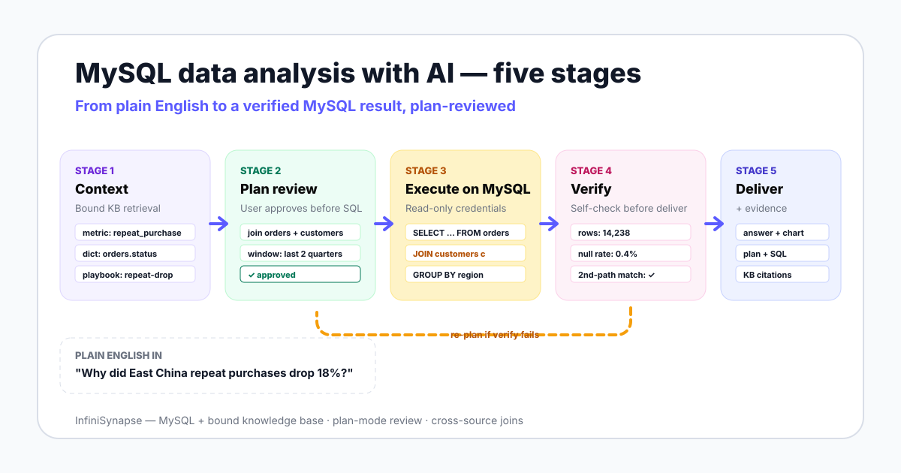

The phrase covers three very different things in vendor marketing. The first is autocomplete inside MySQL Workbench — a model finishes your SELECT for you. The second is a chat box that calls one text-to-SQL request per turn. Neither owns the workflow.
The third — and the one this page is about — is an agent loop. The agent decides which MySQL tables to read, when to ask its knowledge base for a definition, when its own output needs another check, and what to show you for approval. Anthropic frames this as a system that directs its own processes and tool usage rather than following a fixed script.
That distinction is the entire reason this category exists. A text-to-SQL feature gives you SQL. A MySQL AI agent gives you an answer, the SQL it ran to get there, the checks it ran on the result, and the business definitions it relied on. For the buyer-side comparison, see our MySQL data analysis tools guide.

The schema below is the e-commerce shape we have seen in dozens of MySQL deployments. Five tables — orders, customers, order_items, products, channels — with the foreign keys you would expect.
| Table | Key columns | Notes |
|---|---|---|
orders | order_id, customer_id, channel_id, status, order_ts, region_code | status ENUM: 'P', 'F', 'R', 'X' |
customers | customer_id, phone_hash, signup_ts, region_code | region_code is the customer's billing region |
order_items | order_id, product_id, qty, line_revenue | line_revenue is post-discount |
products | product_id, sku, category, list_price | category as JSON for tag arrays |
channels | channel_id, name, type | type: 'web' | 'app' | 'partner' |
The question your team types into the agent:
"Why did East China repeat purchases drop 18% last quarter?"
No SQL. No table names. The agent does the rest in five stages.
| Stage | What the agent does | What you review | Failure caught |
|---|---|---|---|
| 1. Context | Retrieves "repeat purchase = 2nd order within 90 days," the orders.status dictionary, and the East China region-code mapping from the bound KB | Which definitions the agent loaded | Agent guessing your metric |
| 2. Plan | Drafts join across orders + customers, filters region_code, defines 90-day window, computes Q-over-Q delta | Sources, joins, time window, output shape | Wrong table or wrong window |
| 3. Execute | Runs read-only SQL against MySQL with status='F' filter, JOIN, GROUP BY region | The exact SQL the agent ran | SQL the plan did not promise |
| 4. Verify | Checks row counts, null rates, and a second-path metric calculation | The verification report | Silent data quality issues |
| 5. Deliver | Returns the answer, the chart, the plan, the SQL, the KB citations, and any caveats | The full evidence trail | Confident answers with no provenance |
The agent does not look at MySQL first. It queries the bound knowledge base. The retrieved facts shape every downstream stage.
retrieve("repeat purchase definition")
→ "A repeat purchase is a customer's second status='F' order
placed within 90 days of their first."
retrieve("orders.status enum")
→ "P=pending, F=finalized, R=refunded, X=cancelled"
retrieve("East China region codes")
→ "CN-31, CN-32, CN-33, CN-34"The agent shows you the plan in plain language, not SQL, and waits.
PLAN
1. Filter orders to status='F' and region_code IN (CN-31..CN-34)
2. Define "repeat" = 2nd F order within 90 days of first F order per customer
3. Compare Q1 vs Q2 repeat counts and repeat rate
4. Break down by channels.type to find which channel moved
5. Output: table + bar chart, row count + Q-over-Q deltaYou spot one thing: you want the breakdown by channels.name, not channels.type. You edit. The agent re-plans only that step.
SELECT c.region_code, ch.name AS channel_name,
COUNT(DISTINCT o.customer_id) AS repeat_customers
FROM orders o
JOIN customers c ON c.customer_id = o.customer_id
JOIN channels ch ON ch.channel_id = o.channel_id
JOIN (
SELECT customer_id, MIN(order_ts) AS first_ts
FROM orders WHERE status = 'F' GROUP BY customer_id
) f ON f.customer_id = o.customer_id
WHERE o.status = 'F'
AND c.region_code IN ('CN-31','CN-32','CN-33','CN-34')
AND o.order_ts BETWEEN f.first_ts + INTERVAL 1 DAY
AND f.first_ts + INTERVAL 90 DAY
AND o.order_ts >= '2026-01-01'
GROUP BY c.region_code, ch.name;The agent self-checks the result before delivery. A failed check triggers a re-plan, not a confident wrong answer.
VERIFY
- rows returned: 14,238
- null rate on channel_name: 0.4% (within tolerance)
- second-path check: repeat_rate via customer cohort = 11.7% (matches)
- Q-over-Q delta: -18.2% ✓ consistent with the questionThe agent returns the answer with the audit trail. You see the chart, the SQL, the definitions cited, and the row counts. Anyone reviewing this number can re-run the same SQL by hand and reproduce it.
The single biggest determinant of MySQL AI quality is not the model. It is whether the agent's MySQL connection is paired with a curated knowledge base. The agent retrieves from this KB as a tool call before it runs SQL.
Consider a concrete MySQL telemetry case. Suppose events.metric_key contains values like download:tool:windows:x64:agent_excel. Against an unbound MySQL connection, the agent counts rows by metric_key and reports raw values — accurate but uninterpretable. Against a connection bound to a KB that defines agent_excel = Office workflow automation demand, the agent computes the same counts and explains the cluster as Office workflow automation demand, separating computed facts from interpretation.
| Layer | What it answers for MySQL | What breaks without it |
|---|---|---|
| MySQL database | Row-level facts: what was sold, when, to whom | Nothing — but the numbers stand alone, unexplained |
| Bound knowledge base | What the rows mean: which ENUM values are valid, what "repeat" means, which region codes map to East China | The agent guesses; ambiguous fields get computed wrong silently |
| Agent loop | How to combine MySQL facts with retrieved meaning across the five stages | Single-shot SQL with no verification or self-correction |
The database tells the agent what happened. The bound knowledge base tells the agent what it means.
Plan mode is the explicit user-review checkpoint between stage 2 and stage 3. It is the smallest possible safety mechanism that meaningfully changes what your security team will sign off on.
What you see: the sources the agent will read, the joins it will write, the time window, the output shape. What you do: approve, edit a step, or reject. What the agent does: re-plans only the edited steps; never executes against MySQL until you approve. This is a direct application of the ReAct pattern — interleaving reasoning steps with actions reduces error against single-shot generation.
Plan mode also documents your changes. The final evidence trail shows the original plan and the edits, so a reviewer can see what the agent proposed and what the human caught.
Pure-MySQL questions are the easy case. The questions that actually break tools are the ones that span MySQL plus a CSV plus a Supabase user table.
Extend the worked example: "Match the East China repeat-purchase customers to their CRM phone numbers from customers.csv, then check whether their auth.users records in our Supabase project show the same signup region." The agent retrieves schema from MySQL, ingests the CSV, queries Supabase, joins on phone_hash, and returns the cross-source view in one request — without ETL.
This is a documented InfiniSynapse capability across MySQL, PostgreSQL, Snowflake, Supabase, and S3, plus uploaded CSV and Excel files. The relevant intermediate representation, InfiniSQL, connects to a multi-source execution layer rather than forcing every source into one warehouse first. For the Supabase side specifically, see our Supabase data analysis with AI guide.
MySQL's default collation has changed across versions, and case-insensitive collations like utf8mb4_0900_ai_ci can make 'East' and 'east' match in a JOIN. The agent reads information_schema.columns during stage 1 and flags collation mismatches in the plan instead of producing a quietly wrong join.
MySQL treats NULL as not-equal-to-anything-including-itself. An agent that writes WHERE channel_id = NULL instead of IS NULL will silently return zero rows. The verification step in stage 4 catches this by flagging unexpected zero-row results before delivery.
An ENUM like orders.status with values 'P','F','R','X' is meaningless without a dictionary. The bound KB attaches F=finalized so the agent does not have to guess. Without the KB, the agent will frequently guess "F=failed" — exactly inverting your revenue number.
MySQL JSON columns store nested data the agent must query with JSON_EXTRACT or the ->> operator. The agent reads the JSON shape during schema retrieval and produces the right extraction syntax instead of treating the column as opaque text.
MySQL stores DATETIME without a timezone and TIMESTAMP with implicit server-zone conversion. Cross-region analysis goes wrong fast when one table uses each. The agent flags mixed temporal types in the plan and asks which zone to normalize to.
These limits are not pessimism. They are the contract your team needs before you put an agent in front of MySQL. Governance frameworks like the NIST AI Risk Management Framework exist precisely so your security team can sign off on the boundary.
Connect a MySQL source read-only, seed your top ten metric definitions into the knowledge base, and ask one real question from last quarter's backlog. Review the plan, the SQL the agent ran, and the KB citations.
Try InfiniSynapse onlineLast updated: 2026-06-15 · Next scheduled review: 2026-09-15
The five-stage loop reflects InfiniSynapse product behavior and the broader ReAct-style reason-act pattern documented in agent research. The worked example uses a representative MySQL e-commerce schema rather than a customer's real data. Benchmark figures come from the BIRD and Spider public leaderboards. Cross-source examples reference documented InfiniSynapse product demonstrations, not independent benchmarks.
Conflict of interest: InfiniSynapse publishes this guide and sells in the AI database query category. To reduce bias, we name the cases where the agent fails — empty knowledge base, write-back, large-table DBA intuition, dashboard replacement — and link to vendor-neutral governance frameworks.
Update cadence: Reviewed every 90 days for terminology, source links, benchmark figures, and MySQL behavior changes across new server versions.